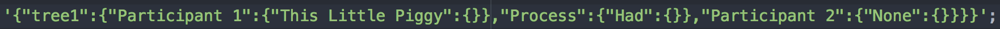
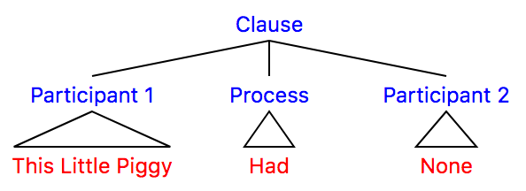
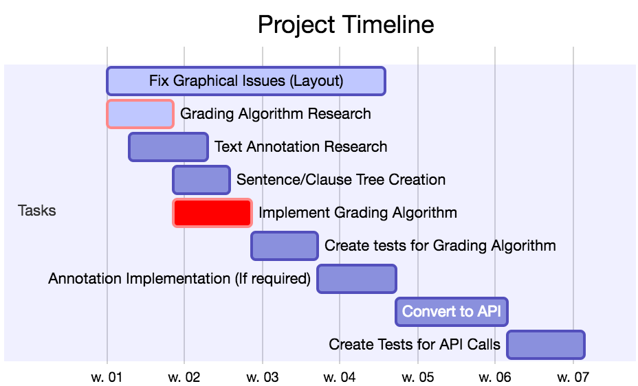

class: center, middle # API for Visualising, Comparing and Grading of Syntax Trees Darren Watkin --- class: middle # Software Overview - Syntax Tree created from JSON using d3 library for javascript.  <div style="text-align:center;">  </div> - Comparing two trees (Students against Teachers) and returning a Grade depending on similarities. - If differences are present the Students Tree will be drawn differently to highlight these differences for learning purposes. i.e A dotted line instead of a whole line - The end product will be an API that returns JSON consisting of the grade & tree structure for each student. --- class: middle # Writing Overview A daily diary is used to record my project work day by day. This will contribute to my final write up due to the following - Day by day record of thought process - Records of my work/progress throughout the year - A template/already written information to use - Screenshots of code/diagrams throughout the project --- class: middle # Planning <div>  </div> --- class: center, middle # Conclusion Software Overview Writing Overview Planning